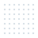
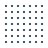

Boitatá¶
My Python tooling for day-to-day geostatistics.
Boitatá holds the tools I use for resource work: drill hole checks, statistics, transforms, variograms, kriging, simulation and model checks. It runs from Python; the numerical core is Rust.
-
A quick tour from samples to a checked estimate, and short pages to get going, such as saving to Parquet.
-
Drill holes, composites, block models, solids, meshes and GIS files.
-
Declustering, top cuts, contacts, swaths and data spacing before any model.
-
Normal scores, log-ratios, multivariate factors and imputation.
-
Experimental variograms, model fitting and coregionalization.
-
Point and block kriging, cokriging, indicators and search tuning.
-
Rock types as proportions, probabilities and simulated layouts.
-
SGS, turning bands and cosimulation, reproducible from one seed.
-
Tonnes and grade above cutoff at the size of a mining block.
-
Cross-validation, swaths, realization checks and classification.
-
Grade shells, contact surfaces and layered horizons.
-
Four deposits, each from raw tables to a result.
-
SNESIM on categories and on continuous values, with its multigrid and hard data.
Install¶
pip install "boitata[all]"
Wheels for Linux, macOS and Windows, Python ≥ 3.11; no compiler needed.
The install page covers uv, poetry, conda and pixi, wheels, extras and offline installs.